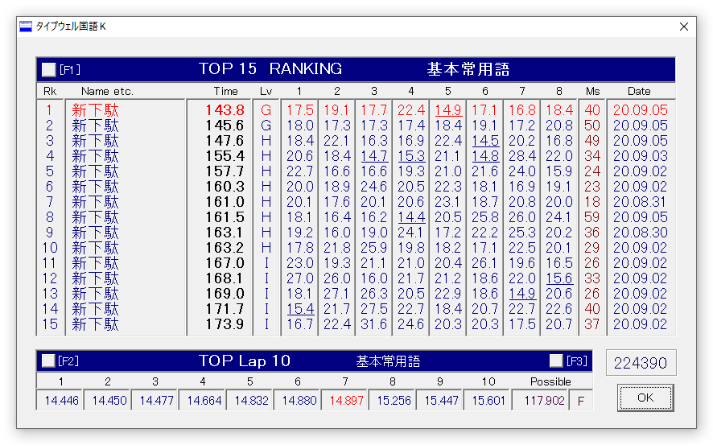
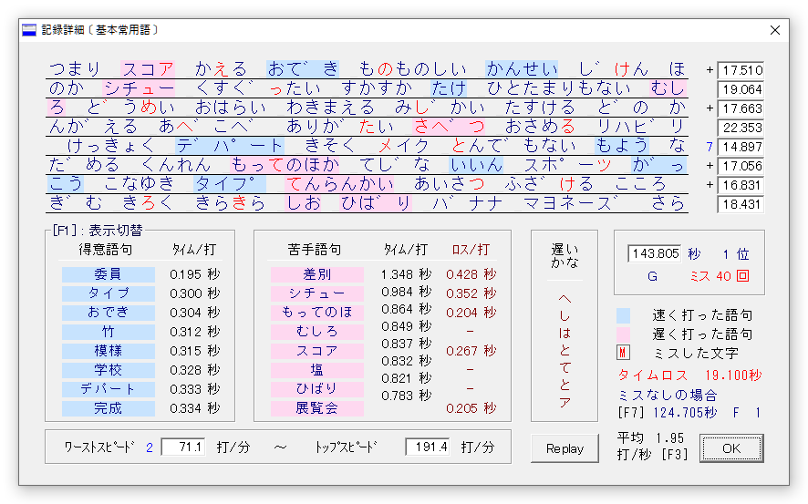
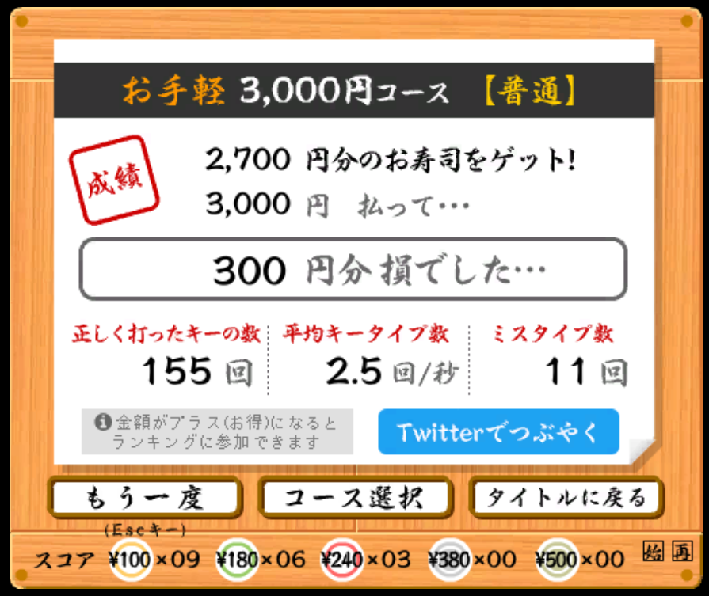

長いことHから抜け出せずにいたけれど、ここにきて一気に体感速度が上がった。寿司打でももうちょっとで0円になりそうな惜しいライン。
やっぱり速度向上で大きかったのは普段使いの浸透で、全てではないにしても仕事やブログ書きで使い始めたのが大きい。たぶん昨日書いた長めの記事とかで、RPGで言うところの"経験値アップ"したんだろうな。もちろん今も新下駄配列で書いている。
体感的にも、普段使いを始める前と後とでは速度の差は大きくて、本当にサクサクと打てるようになってきた感がある。
やっぱり配列が良くできているので、使えば使うほど入力速度は速くなっていくし、一部の単語を除いて軽快に打てて手も楽。
入力の反射速度が上がってきているので、少しずつSlackとかでメッセージを打つときも使い始めているけれど、さすがにすぐ返答とか高速打鍵が求められるシーンで長文を書くのにはまだ辛い。
けど今のGくらいの速度なら、ローマ字入力と比較しても1/2～1/3程度の速度で打てる一方で、手の疲労度は比べものにならないくらい楽。
なので既に、特に急ぎでない返答とか以外の文字書きでは、自然とかな入力しか使わなくなってきているので、今後は自然と速度も上がる一方で打つ負荷は下がっていくのだろうと思う。
こうやってブログを書くこと自体、前より力まずに自然体で書けるようになっているので、現段階でも新下駄配列の導入効果は大きい。（途中で左右ダブルキーボードにしたのも大きいかな。）
―― そもそもの目的として、打つことを楽にすれば、仕事終わりや土日のブログの更新とかメモ書きなどで書く量が自然とが増えるんじゃないかと考えて始めたこのかな入力導入計画。今の段階でも十分に大成功といえそう。机に向かって思索する時間が前に比べて格段に増えてきていて嬉しい。
新配列習得の投資コストは決して低いとは言えないけれど、タイピング練習自体が自分は結構楽しみでやってるので、マイタイピングで太宰治とか夏目漱石の文章を打ったり、好きな歌の歌詞を打ったり、それ自体を楽しみにしていければそこまで苦ではない。
一方で逆にいままでとても不思議だったのが、ローマ字入力 (QWERTY) はタイプウェルでXH程度に速かったにもかかわらず全く仕事中以外で書く気が起きなかったので、よほどローマ字入力するのに無意識で手や首肩に負担をかけていたのかもしれない。
今後は日本語入力だけでなくて、プログラムで英字入力することも少しずつ楽にしていきたいので、長期的には、Programmer Dvorakとかの導入も考えていくかもしれない。